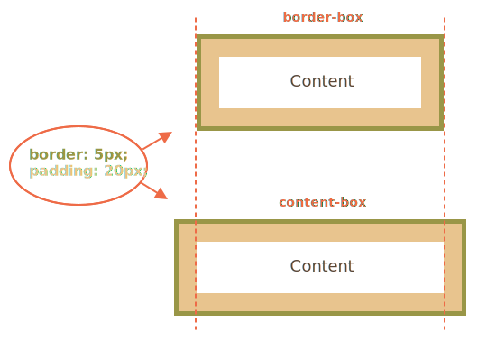

Порад для написання сучасного CSS
Використовуйте flexbox
Flexbox створили не просто так. Звісно, float та інлайн-блоки працюють, але це по суті інструменти для стилізації документів, а не сайтів. Flexbox, в свою чергу, спеціально розроблений для створення макетів. Набір властивостей, що використовуються з flexbox дають розробнику дуже гнучкий механізм створення адаптивних сторінок. З flexbox ви полюбите адаптивну верстку. На сьогодні він має дуже гарну підтримку в браузерах, так що вас нічого не повинно зупиняти.

Якщо це вас зацікавило, в нас є стаття, де описано 5 різних випадків використання flexbox.
Завжди скидайте CSS
Хоча за останні роки ситуація поліпшилася, відображення елементів в різних браузерах все ще досить відрізняється. Найкращий спосіб виправити це — скинути стилів для всіх елементів.
Для цього є вже готові бібліотеки: normalize.css, minireset та ress. Якщо ви не хочете використовувати бібліотеку, ви можете зробити це самі. Наприклад, так (це дуже зверхній приклад):
Border-box для всіх, і нехай ніхто не піде ображеним
Більшість новачків не знають про властивість box-sizing. А дарма, вона дуже важлива. Кращим способом зрозуміти її значення буде розглянути два можливі значення:
- content-box (за умовчуванням) — коли ми задаємо ширину чи висоту елемента, змінюється розмір контенту всередині, а padding і рамка (border) додаються до цього значення. Тобто, якщо ми задамо div'у з padding: 10px ширину 100px, то в макеті він займе 120px (100 + 10*2).
- border-box — в цьому випадку padding та рамка вже включені в розміри блока, і тепер div з шириною 100px займе рівно стільки ж місця в макеті.

Встановлення border-box для всіх елементів робить вашу роботу простіше, позбавляючи необхідності кожен раз рахувати.
CSS анімації за допомогою transform
Не анімуйте ваші елементи зміною ширини, висоти чи відступів. Краще використовувати властивість transform, що надає зручний спосіб для зміни вигляду елементу.
Наприклад, ми хочемо анімацію мяча, що вилітає зліва.
Transform може приймати велику кількість функцій (translate, rotate, scale та інші).
Не використовуйте !important
Зовсім. Те, що спочатку здається швидким рішенням проблем, стає великою проблемою в майбутній підтримці коду. Не лініться і знайдіть проблему в селекторі і чому він не працює, та виправте.
Єдиний випадок, коли можна використовувати !important, це перезаписання інлайн стилів, що вказані в HTML ( div ).
Використовуй препроцесори, Люк
Ви вже чули про них: Sass, Less, PostCSS (насправді це постпроцесор — прим. пер.), Stylus. Препроцесори - наступна ланка в еволюції CSS. Вони дозволяють використовувати змінні, функції, вкладені селектори і інші круті речі, що роблять написання CSS дійсно приємним.
Наприклад, ось так в Sass використовуються змінні і функції:
Єдиним мінусом є те, що код на препроцесорах повинен збиратися в звичайний CSS. Проте, якщо ви вже використовуєте збиральники проектів (Grunt, Gulp, WebPack) - це не буде проблемою. А якщо не використовуєте, то слід почати.
Якщо ви вирішили спробувати, але не знаєте що саме, то в нас є порівняння Sass vs Less vs Stylus. Якщо ж вже вирішили, то в нас є статті про LESS і про Sass, і ще одна.
Валідація
Можливо, валідація CSS не така важлива як валідація HTML чи JS, але перевірка ваших стилів через CSS Linter вкаже на помилки, попередить про використання поганих практик і підкаже як ваш код можна поліпшити.
Зробити це теж можна різними шляхами:
- Онлайн інструменти W3 Validator, CSS Lint
- Плагіни для редакторів: Sublime Text, Atom
- Бібліотеки stylelint (Node.js, PostCSS), CSSO та css-validator (Node.js)